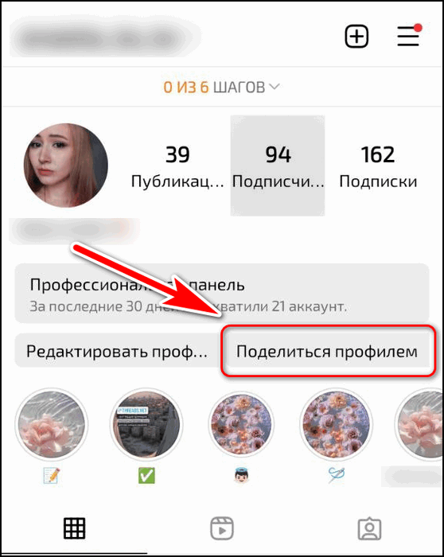
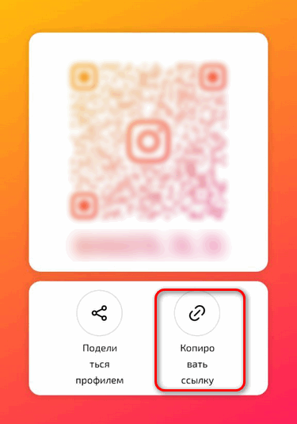
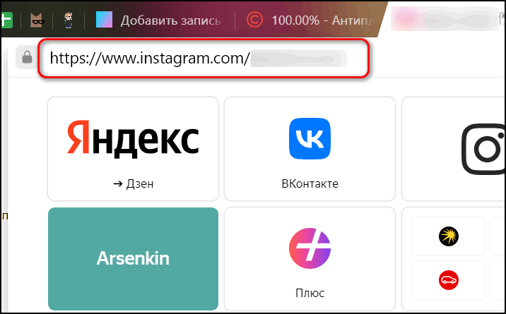
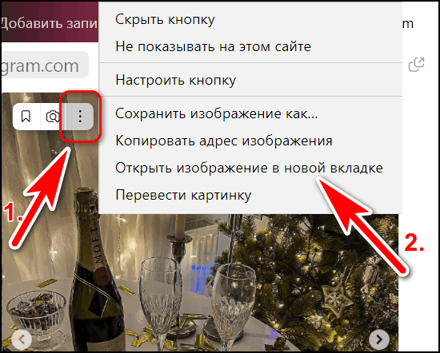
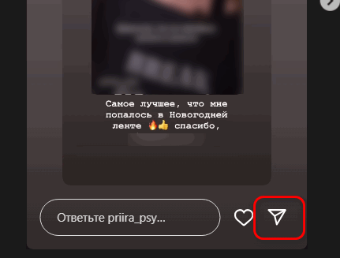

Как скопировать ссылку из Инстаграма: на пост, на профиль, на Сторис

Скопировать ссылку на свой Инстаграм* пользователь может несколькими способами: через адресную строку в браузере, воспользоваться сгенерированным QR-кодом, выбрать опцию «Поделиться» или же просто указать никнейм. Любой из вариантов приведет потенциального посетителя к нужному аккаунту.
Получить ссылку на свой аккаунт в Инстаграме*
В социальной сети появляются новые способы, как делиться ссылкой на страницу: свою или чужую, а если чужой аккаунт закрыт, но вы хотите смотреть его фото или видео, тогда читайте нашу другую статью на сайте. Наиболее простой вариант – отправить публикацию в другую социальную сеть, откуда по ссылке зрители попадут на нужную страницу. Основные способы, как скопировать ссылку на профиль в Инстаграм*:
- кнопка «Поделиться профилем» на своей странице через мобильное приложение;
- QR-код. Для публикаций и отдельно для аккаунта;
- скопировать ссылку с помощью адресной строки;
- использовать значок «@» и указать свой никнейм;
- сделать скриншот поста, где будет виден ник.
Любой из вариантов подходит, чтобы поделиться своим аккаунтом в других социальных сетях или отправить друзьям.
Как отправить с телефона
Взять ссылку на страницу Инстаграм* возможно через кнопку «Поделиться», которая расположена в профиле каждого пользователя, посмотреть вы сможете даже в закрытом аккаунте. Нажав по ней, будет предложено два варианта: сгенерировать QR или получить именно ссылку на страницу. Как получить ссылку своего аккаунта с телефона:
- Зайти в Инстаграм* - перейти в аккаунт.
- Нажать сверху: «Поделиться профилем» - появится страница с QR-кодом.

- Нажать сверху: «Копировать ссылку».

Далее, полученный адрес можно отправить в других социальных сетях или друзьям в мессенджере. Или же, воспользоваться опцией с QR-кодом и отправить в виде картинки. Другие пользователи, чтобы посетить страницу, должны навести на картинку камеру и появится ссылка.
Поделиться с ПК
С компьютерной версии также существует возможность поделиться адресом. Причем двумя разными способами:
- скопировать из адресной строки;
- функция: «Поделиться ссылкой».
Первый вариант проще и дает доступ к стандартному переходу по адресу:
- Зайти в Инстаграм* с компьютера – сверху появится строка с адресом.

- Выделить ссылку и нажать «Копировать».
Этой ссылкой на страницу в Инстаграм*, можно поделиться и в мессенджерах, и на других сайтах. Посетителю нужно нажать по активной ссылке и тут же произойдет переход на страницу.
Скопировать адрес на видео и фото
На пост в Инстаграм* делятся адресом двумя способами: дополнительное меню с функцией «Копировать адрес» и адресная строка с компьютерной и браузерной версий. Чтобы с Андроида отправить:
- Перейти к нужной публикации – нажать по трем точкам сверху.
- Копировать ссылку – сохранить адрес.
Вставить скопированную ссылку не сложно. Например, чтобы передать её в сообщении: нажать по полю ввода текста и выбрать функцию «Вставить». Появится последний скопированный элемент, то есть полученная ссылка из Инстаграма*. Чтобы ссылка сохранилась нельзя копировать после другие элементы (текст, картинки или ссылки). Таким способом можно передавать адреса на видео в Инстаграме* на Айфоне и Андроиде.
На отдельную фотографию в карусели
Карусель предполагает добавление в одну публикацию до 10 фото и видео. При копировании ссылки на фото, пользователь получает адрес на все изображения. Поэтому, чтобы отправить только на один снимок из публикации, нужно воспользоваться компьютерной версией и найти адрес в коде страницы. Как сделать ссылку на одно фото из карусели:
- Воспользоваться Яндекс Браузером – перейти в Инстаграме* к нужной публикации.

- Выбрать снимок – навести мышкой по изображению.
- Появится дополнительное меню с выбором: «Открыть картинку в новой вкладке».
- Скопировать ссылку из адресной строки.
В этом случае пользователю не придется разбираться с кодом страницы, чтобы отыскать нужную строчку. Если вариант проще: сделать скриншот нужной картинки и отправить. Или можно поделиться чужим профилем в Инстаграм*:
- Перейти в нужный аккаунт – нажать три точки сверху.
- Поделиться – выбрать вариант «Копировать ссылку».
Как и в случае со своим аккаунтом, полученный адрес можно отправить друзьям и знакомым в мессенджерах. Если хотите узнать кто заходит в ваш профиль и копирует его, тогда проверьте своих гостей.
Взять ссылку в Инстаграме* на комментарии
На комментарий кинуть ссылку в Инстаграме* невозможно, зато можно скопировать адрес на отдельную публикацию или отметить другого человека. Предположим, что нужно показать товарищу определенный комментарий. В таком случае, его можно отметить в ветке ответов или в откликах под самим постом. Как отметить другого пользователя:
- Зайти в Инстаграм* - выбрать нужную публикацию.
- Перейти к комментариям – нажать по текстовому полю.
- Поставить значок «@» и ввести никнейм товарища.
- Отправить.
Оставить такую отметку можно даже без дополнительного текста: только упоминание другу в комментариях.
Поделиться ссылкой на Сторис
На Историю в социальной сети отправить ссылку можно в личном сообщении, с помощью скриншота или адреса, скопированного из браузера. Еще один вариант – отправить именно ссылку на страницу автора Сторис. Но когда вы откроете Stories другого человека, вы отобразитесь там как зритель, если хотите остаться анонимным, используйте сервисы для просмотра чужих историй. Поделиться Историей с помощью Директа:
- Зайти в нужные Сторис – нажать снизу по кнопке в виде самолетика.

- Выбрать пользователя, которому будет отправлено в личном сообщении.
- Подтвердить передачу Истории.
В Директе получатель увидит изображение Сторис и сможет перейти к определенному фото или видео. С компьютерной версии можно сделать ссылку на Историю, скопировав её и передать на других сайтах:
- Перейти к нужной Истории – нажать сверху по адресной строке.
- Появится адрес, который необходимо скопировать.
- Сохранить URL в буфер обмена.
Этим способом можно копировать ссылку на любое фото и видео в Сторис, и посетитель перейдет именно к выбранному изображению.
Проще, из всех вариантов, сделать скриншот и поделиться им с друзьями. Если на картинке будет виден никнейм, получатели смогут найти аккаунт и посмотреть другие публикации. И такой способ подойдет в случае, если у автора Stories закрытая учетная запись, и чтобы увидеть контент необходима подписка.
Не получается отправить ссылку: что делать
Не получится передать ссылку на Директ, отдельные ответы в ветке комментариев и на персональные Истории. Те, которые были опубликованы для списка близких друзей. В остальном случае, проблема с передачей ссылки может заключаться в:
- последующем копировании других элементов;
- удалении публикации из общего доступа;
- статуса аккаунта. Поделившись закрытым профилем, посетитель не увидит размещенный контент;
- технических проблемах при работе с социальной сетью.
Например, при копировании пропал Интернет или адрес не был скопирован из браузера полностью. Неправильная ссылка – основная проблема из-за которой посмотреть переданную публикацию не получится.